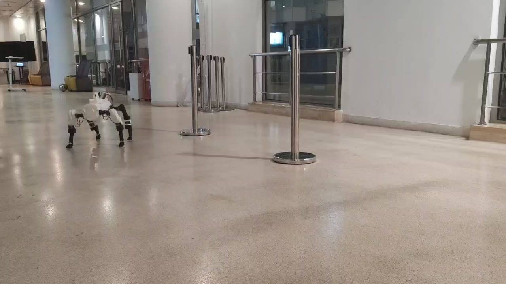

Robot morphology × learned control
LACE–CRAFT
Robot Co-Design with Actor Inheritance and Blackboard Collaboration
Continue learning on the current robot.
Adapt what it has learned to new designs.

The idea
A new body need not
start from scratch.
Robot co-design changes both the body and its training reward. LACE–CRAFT preserves useful control experience while testing those changes: LACE trains and selects candidates; CRAFT proposes and cross-reviews morphology–reward pairs.
Reuse learned control
Continue from the full training state, or copy actor parameters and observation statistics into a new design.
Review body and reward together
Four specialist roles share experimental records, develop proposals, and cross-review their interaction.
Select, record, repeat
Compare trained candidates with the retained incumbent using a fixed task metric, then update the shared record.
Inside the framework
Two training routes.
One shared design process.
Carry experience into the next round.
Both routes begin with the same best robot so far. Continuation restores the full learner state on the unchanged body and reward. New designs inherit actor parameters and observation statistics, with other learner components initialized anew.
- Continue trainingSame body and reward · restored training state
- Adapt new designsProposed bodies and rewards · inherited actor
- Compare candidatesEqual additional training budget per branch · retained incumbent
Changes are reviewed across disciplines.
Feedback interprets the current behavioral evidence. Morphology and Reward draft in parallel, then simultaneously cross-review each other's proposals. Integration constructs complete body–reward pairs for the next training round.
- FeedbackDiagnoses and suggested changes from experimental evidence
- Morphology ↔ RewardParallel drafts and reciprocal cross-review
- IntegrationSix complete morphology–reward pairs
See the process
From the first checkpoint
to the next robot.
Narrated demonstration · 2 min 44 sec · 1080p · Real-world walking shown at 8× speed Download video ↓
Five locomotion tasks
Evaluating the selected policies.
Across the five tasks, LACE–CRAFT's mean task score is 6.4–91.9% higher than the reproduced D2C baseline under the reported budgets.
Each fixed policy is evaluated with three seeds and 128 episodes per seed. Both searches generate 30 new designs; LACE–CRAFT additionally runs four continuation training units.
Ant
Task score · mean ± sample standard deviation across evaluation seeds
All results and ablations
| Task | Default | D2C | No Actor inheritance | No replay evidence | LACE–CRAFT |
|---|
D2C's final selected morphology–reward pair is retrained once before these evaluations. Evaluation-seed variability is distinct from variability across independent training runs or complete searches.
Beyond parameterized bodies
From shape reference
to an articulated robot.
Generated meshes become editable links, configured joints, motor interfaces, and simulation assets. Hardware adaptation turns the geometry into printable parts and a walking prototype.
Built, assembled,
and tested in motion.
The assembled robot includes an SO-101 arm. Because of the current hardware constraints, the indoor walking demonstration uses the hardware-adapted 12-leg-joint robot with its arm removed.
The geometry-stage model and the hardware-adapted controller are described separately in the paper.
See assembly and walkingLACE–CRAFT
Reuse control.
Revisit the design.
Robot Co-Design with Actor Inheritance
and Blackboard Collaboration